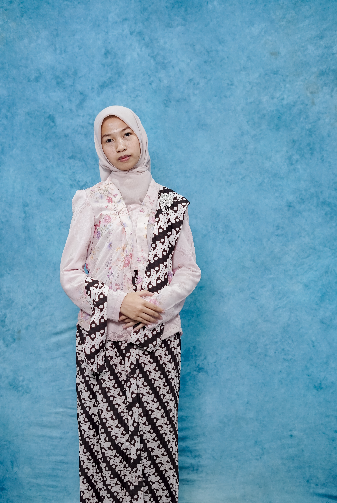

🕷️
Spider-Man Gesture
Project Python menggunakan kamera, MediaPipe, dan OpenCV untuk mendeteksi gesture tangan dan menampilkan efek jaring.
🕷️ Coba SekarangStudent • Programmer • Networking Enthusiast
Selamat datang di e-portfolio saya. Di sini saya menyimpan profil, skill, project, serta kumpulan tugas sekolah.

Saya adalah seorang pelajar yang tertarik pada dunia teknologi. Saya senang mempelajari pemrograman, jaringan komputer, keamanan jaringan, dan membuat project secara langsung, selain itu saya mempunyai ketertarikan dibidang seni.
Website ini dibuat sebagai e-portfolio untuk mendokumentasikan proses belajar, project, tugas, hobi, dan pengalaman saya selama sekolah.
Teknologi dan bidang yang sedang saya pelajari.
Project yang pernah atau sedang saya kerjakan.
Project Python menggunakan kamera, MediaPipe, dan OpenCV untuk mendeteksi gesture tangan dan menampilkan efek jaring.
🕷️ Coba SekarangPraktik konfigurasi router dan BGP untuk memahami routing antar jaringan.
Website e-portfolio untuk menampilkan profil, project, tugas, dan sertifikat dalam satu tempat.
Project computer vision menggunakan kamera dan gesture tangan untuk memberikan efek blur pada wajah.
😶🌫️ Coba SekarangTugas dan Project yang saya kerjakan.
Administrasi Sistem Jaringan.
Materi, praktik, dan laporan keamanan jaringan.
Assignment, presentation, dan project.
Hubungi saya melalui media sosial.